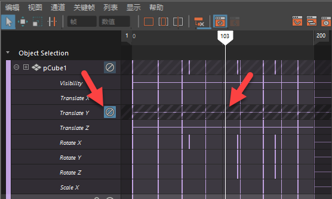
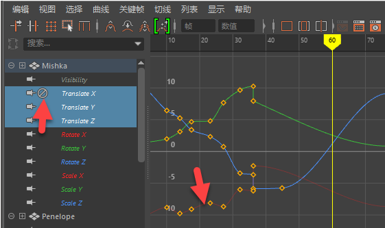

如果要暂时“关闭”通道的效果，可以禁用动画通道。这样，您可以将注意力集中在动画的另一部分，或隔离动画以对其进行微调。有时，通过禁用通道，可以将不必要的动画从播放中排除，从而提高性能。
本主题介绍了如何在摄影表编辑器(Dope Sheet Editor)、曲线图编辑器(Graph Editor)和通道盒(Channel Box)中禁用通道。
禁用摄影表通道
 图标来禁用通道。
图标来禁用通道。
在“摄影表”(Dope Sheet)中禁用通道
- 在“摄影表”(Dope Sheet)大纲视图区域中，选择要禁用的通道。
- 选择(Channels > Mute Channel)，或单击通道名称旁边的“禁用”(Mute)图标 。

禁用的通道在视图区域中灰显，并带有对角线条纹
您仍然可以在“摄影表”(Dope Sheet)中查看和操纵禁用通道并向其添加关键帧。需要隔离和查看动画的特定部分时，该功能是很有用的。在“摄影表”(Dope Sheet)中编辑禁用通道时，“摄影表”(Dope Sheet)视图区域中的相应动画通道会更新。
在“摄影表”(Dope Sheet)中取消禁用通道
在“摄影表”(Dope Sheet)大纲视图中选择要取消禁用的通道，然后选择(Channels > Unmute Channel)。
将删除当前动画曲线的“禁用”(Mute)节点，并从大纲视图和视图中移除所有出现的“禁用”(Mute)。
禁用曲线图编辑器通道
在“曲线图编辑器”(Graph Editor)中禁用曲线
- 在“曲线图编辑器”(Graph Editor)大纲视图中，选择要禁用的通道。
- 从“曲线图编辑器”(Graph Editor)的“曲线”(Curves)菜单中选择(Curves > Mute Channel)。
禁用曲线将显示在视图区域中。
禁用曲线在“曲线图编辑器”(Graph Editor)中显示为暗显曲线
可以在“曲线图编辑器”(Graph Editor)中查看和操纵禁用曲线并向其添加关键帧。需要隔离和查看动画的特定部分时，该功能是很有用的。在“曲线图编辑器”(Graph Editor)中编辑禁用通道或曲线时，“曲线图编辑器”(Graph Editor)中的相应动画曲线会更新。
在“曲线图编辑器”(Graph Editor)中取消禁用通道
在“曲线图编辑器”(Graph Editor)大纲视图中选择要取消禁用的通道，然后选择(Curves > Unmute Channel)。
将删除当前动画曲线的“禁用”(Mute)节点，并从大纲视图和视图中移除所有出现的“禁用”(Mute)。
在“通道盒”(Channel Box)中禁用通道
在通道盒(Channel Box)中，可以使用“通道盒”(Channel Box)的“通道”(Channel)菜单中的“禁用通道”(Mute Channel)选项来禁用通道。禁用通道旁边有一个棕色标签
使用“通道盒”(Channel Box)禁用通道
- 请执行下列任一操作：
- 在选定通道上单击鼠标右键，然后选择“禁用选定项”(Mute Selected)，或者从“通道盒”(Channel Box)菜单栏中选择(Channels > Mute Selected)。
- 在“通道盒”(Channel Box)上单击鼠标右键，然后选择“禁用全部”(Mute All)以禁用所有通道，或者从“通道盒”(Channel Box)菜单栏中选择(Channels > Mute All)。
在“通道盒”(Channel Box)中取消禁用通道
在禁用通道上单击鼠标右键，然后选择“取消禁用选定项”(Unmute Selected)或“全部取消禁用”(Unmute All)。